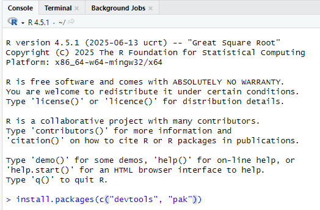

Installing the cancR package
Mathias Ørholt
cancR.RmdQuick start
If the cancR package has previously been installed on the computer
and needs to be updated, use the pak-package with the command
pak::pak("matorholt/cancR"). R needs to be restarted after
installing/updating cancR.
The cancR package is still under development, so regular updates are recommended.
Install cancR
If the cancR package has not been installed before, there are four steps.
Step 1
Install the packages “devtools” and “pak” using the command
install.packages(c("devtools", "pak"))

Step 2
Install the latest version of Rtools from their website: https://cran.r-project.org/bin/windows/Rtools/rtools45/rtools.html (click on the link “Rtools45 installer”) and follow the instructions